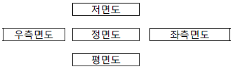
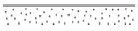
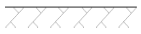
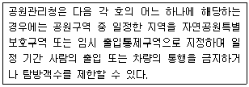
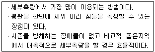
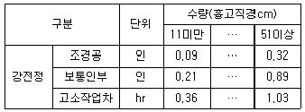
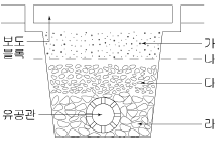
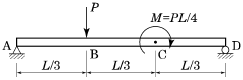

조경산업기사 (2015-03-08 기출문제)
1과목: 조경계획 및 설계
1. 광원에 따라 물체의 색이 달라지는 광원의 특성은?
- 시인성
- 연색성
- 항상성
- 주목성
(정답률: 87%)

2. 다음 중 조경설계기준상의 관리사무소와 관련된 내용중 틀린 것은?
- 부상 등 긴급시의 연락과 공원시설의 이용 및 접 수 등에 관한 정보제공기능이 쉽도록 배치한다.
- 관리용 장비보관서와 적치장은 이용자의 눈에 잘 띄지 않도록 관리사무소 뒷면에 배치하고 수목 등으로 적절히 차폐시킨다.
- 관리실, 화장실, 숙직실, 보일러실, 창고 등을 포함하되, 화장실은 이용자들과 분리하여 독립적으로 이용할 수 있도록 별도의 장소에 분리 배치한다.
- 관리사무실의 배치는 설계대상공간마다 1개소를 원칙으로 하되, 통합관리가 가능할 대에는 인접하는 2~3개소의 공간에 1개소를 설치한다.
(정답률: 85%)
3. 미적 구성원리 중 비례(proportion)에 대한 설명으로 가장 적합한 것은?
- 변화를 위주로 한 배치
- 변화하여 가는 과정에 있어서의 상호연관성
- 상호비교에서 그 차이가 표현되도록 하는 것
- 부분과 전체와의 수량적 관계가 일정한 비율을 갖는 것
(정답률: 85%)
4. 건설분야 제도의 치수 및 치수선에 관한 설명으로 옳지 않은 것은?
- 치수는 특별히 명시하지 않는 한 마무리 치수로 표시한다.
- 협소한 간격이 연속될 때에는 인출선을 사용하여 치수를 쓴다.
- 치수선의 양 끝 표시는 화살 또는 점으로 표시할 수 있으며 같은 도면에서 2종을 혼용할 수 있다.
- 치수 기입은 치수선에 평행하게 도면의 왼쪽에서 오른쪽으로, 아래로부터 위로 읽을 수 있도록 기입한다.
(정답률: 93%)
5. 그림과 같이 투상하는 방법은?

- 제1각법
- 제2각법
- 제3각법
- 제4각법
(정답률: 73%)
6. 건설재료단면의 표시방법 중 모래를 나타낸 것은?


(정답률: 95%)
7. 도심공동화로 인해 나타나는 현상에 해당되는 것은?
- 스프롤(sprawl)현상
- 도심의 상대적 인구 증가
- 직주 근접현상 발생
- 기성 시가지의 활성화
(정답률: 85%)
8. 계획설계 과정 중 기본구상안 마련, 비교분석, 영향평가, 아이디어와 개선 방안의 수용, 집행방안 등을 수항하는 단계는 어느 것인가?
- 조사
- 분석
- 종합
- 시공
(정답률: 72%)
9. 다음 각 호에 해당하지 않는 것은?

- 자연생태계와 자연경관 등 자연공원의 보호를 위한 경우
- 자연적 또는 인위적인 요인으로 훼손되어 자연회복이 불가능한 경우
- 자연공원에 들어가는 자의 안전을 위한 경우
- 공원관리청이 공익상 필요하다고 인정하는 경우
(정답률: 66%)
10. 건축법에서 정하고 있는 공개공지 등의 확보의무에 해당되지 않는 지역은?
- 준주거지역
- 상업지역
- 준공업지역
- 자연녹지지역
(정답률: 79%)
11. 조경계획의 자연환경분석 중에서 항공사진을 활용하여 분석하기 가장 어려운 것은?
- 토지피복 분석
- 지형분석
- 식생 분석
- 경관분석
(정답률: 65%)
12. 어떤 지역의 경관 특성을 향상시키기 위한 방법으로 가장 부적합한 것은?
- 부조화 요소를 제거한다.
- 강조 요소를 도입한다.
- 주경관요소와 대등한 상징물을 설치한다.
- 경관특성에 조화되는 계획을 수립한다.
(정답률: 89%)
13. 다음 중 사절유택(四節遊宅)의 설명으로 옳지 않은 것은?
- 계절의 풍경과 정서를 즐겼다.
- 신라시대에 즐기던 풍습이다.
- 일반 백성들이 즐겨 찾는 놀이장소이다.
- 계절에 따라 거처하는 별장형의 주택을 말한다.
(정답률: 95%)
14. 고려시대 별궁과 정원을 가장 많이 호화롭게 꾸민 왕은?
- 예종
- 의종
- 문종
- 충숙왕
(정답률: 72%)
15. 일본의 정원 양식 중 뜰에 물통(쓰꾸바이)이 자주 활용되었던 시기는?
- 침전식정원(寢殿式庭園)
- 고산수정원(枯山水庭園)
- 다정(茶庭 또는 露地)
- 임천회유식정원(林泉廻遊式庭園)
(정답률: 85%)
16. 다음 중국의 역대 조경가와 활동시대 연결이 옳지 못한 것은?
- 계성 - 청(淸)
- 예운림 - 원(元)
- 주면 - 송(宋)
- 염입덕 - 당(唐)
(정답률: 79%)
17. 전라남도 담양군 남면에 있는 양산보가 조성한 정원은?
- 선교장 정원
- 다산초당
- 소쇄원
- 부용동 정원
(정답률: 93%)
18. 조경기법의 하나인 노트(Knot)에 관한 설명으로 옳지 않은 것은?
- 무늬화단을 만드는 수법이다.
- 주로 상록수를 사용하였다.
- 주로 키가 작은 나무를 사용하였다.
- 중세 이후 미국에서 크게 유행하였다.
(정답률: 80%)
19. 다음 중 이집트의 분묘건축에 속하는 것은?
- 지구라트(ziggurat)
- 지스터스(xystus)
- 키오스크(kiosk)
- 마스터바(mastaba)
(정답률: 73%)
20. 영국의 정원발전에 기여한 사람들과 그 관련설명이 옳지 않는 것은?
- 랩턴 : 큐 가든에 중국식 탑을 도입
- 브리지맨 : 하하(ha-ha)기법의 도입
- 센스톤 : 낭만주의적 조경방식의 도입
- 브롬필드 : 풍경식 정원이 악취미이고 비합리적이라 주장
(정답률: 71%)
2과목: 조경식재
21. 황색 또는 갈색으로 물드는 단풍이 아름다운 수종은?
- Acer triflorum
- Acer tataricum subsp. ginnala
- Acer pictum subsp. mono
- Euonymus alatus
(정답률: 61%)
22. 다음 중 천근성에 해당하는 수종은?
- 후박나무
- 자작나무
- 가시나무
- 가중나무
(정답률: 70%)
23. 들잔디를 파종하는 시기가 가장 적당한 것은?
- 3~4월
- 5~6월
- 9~11월
- 10~11월
(정답률: 66%)
24. 다음 중 상록성 식물에 해당하는 것은?
- Viburnum carlesii
- Viburnum odoratissimum var. awabuki
- Viburnum erosum var. vegetum
- Viburnum opulus
(정답률: 67%)
25. 실내식물 생육시 빛의 강도가 너무 약할 때 일어나는 현상이 아닌 것은?
- 잎이 황색으로 변한다.
- 잎이 마르고 희게 된다.
- 점차적으로 잎이 떨어진다.
- 잎의 두께가 얇아지고 줄기가 가늘어 진다.
(정답률: 58%)
26. 다음 지피식물로 이용되는 특성 중 양지성에 해당되는 식물은?
- 산수국
- 꿩고비
- 복수초
- 옥잠화
(정답률: 66%)
27. 화살나무에 대한 설명으로 옳지 않는 것은?
- 과명은 노박덩굴과이다.
- 영명은 Winged spindle Tree 이다.
- 열매는 시과(날개열매)이다.
- 꽃은 황록색으로 5월에 핀다.
(정답률: 62%)
28. 다음 수종 중 관상시 열매가 붉은색이 아닌 것은?
- Cornus officinalis
- Sorbus commixta
- Euonymus alatus
- Ligustrum obtusifolium
(정답률: 55%)
29. 다음 중 오죽(검정대, 흑죽, 분죽)의 설명으로 틀린것은?
- 벼과(Gramineae)이다.
- 주로 중부 이남에 분포한다.
- 줄기 지름이 5~15mm 이고 중앙 윗부분에서 5~6개의 가지가 나오고, 초상엽 밖에 굽은 털이 있으며 죽순은 5월에 나온다.
- 꽃은 양성 또는 단성으로 2~5개가 꽃차례를 둘러싼 넓은 피침형 포에 들어 있다.
(정답률: 62%)
30. 다음 중 녹음수로 가장 적합한 것끼리 짝지어진 것은?
- 회화나무, 느릅나무
- 아왜나무, 낙우송
- 화백, 층층나무
- 단풍나무, 흰말채나무
(정답률: 78%)
31. 다음 중 잔디붙이기와 관련된 설명으로 틀린 것은?
- 비탈면에 잔디를 붙을 때에는 잔디 1매당 2개의 떼꽂이로 잔디가 움직이지 않도록 고정한다.
- 시공대상지에 산재한 큰 부스러기, 쓰레기 등을 제거하고 지반을 토심 0.2m로 경운한 후 흙덩이를 잘게 부수고 돌, 잡초 등 불순물을 제거한다.
- 롤형잔디 전체지면에 틈새 없이 붙이고 모래나 사질토를 가볍게 살포한 후 롤러로 다지고 충분히 관수한다.
- 풀어심기(stolonizing or springging)는 잔디에서 풀은 포복경 또는 지하경을 0.1 ~0.5m 정도로 잘라 줄파한 후 잔디뿌리가 반만 묻히도록 흙을 덮는다.
(정답률: 72%)
32. 다음 중 중앙분리대의 식재방법이 아닌 것은?
- 랜덤식
- 루버식
- 평식법
- 독립수법
(정답률: 66%)
33. 다음 중 자연적으로 원추형의 수형을 갖는 수종은?
- Acer negundo
- Cryptomeria japonica
- llex integra
- Euonymus alatus
(정답률: 64%)
34. 연안대 수변림의 식재수종만 올바르게 나열된 것은?
- 왕버들, 버드나무, 오리나무, 들메나무
- 조록싸리, 신갈나무, 선버들, 댕강나무
- 졸참나무, 들메나무, 백당나무, 수양버들
- 할미꽃, 미루나무, 좀작살나무, 갯버들
(정답률: 81%)
35. 화단 양식 중 자수화단과 비슷하나 보통 지면이나 보도보다 1m정도 낮게 만들어 위에서 내려다보면서 관상할 수 있게 만든 화단은?
- 기식화단
- 노단화단
- 침상화단
- 리본화단
(정답률: 76%)
36. 다음 중 양수에 해당하는 것은?
- 너도밤나무
- 자금우
- 굴거리나무
- 일본잎갈나무
(정답률: 60%)
37. 산업단지 및 공장정원의 식재기법으로 옳지 않는 것은?
- 완충녹지의 경우 상록수와 낙엽수의 비율은 5:5 로한다.
- 공장정원의 바닥은 나지로 남겨두지 않는다.
- 산업단지의 경우 지속가능한 녹색 생태산업단지의 원리를 적용한다.
- 건축물 연면적이 2천제곱미터 이상인 공장의 경우 대지면적의 100분의 10 이상 조경에 필요한 조치를 하여야한다.
(정답률: 71%)
38. 학교정원에 배식하는 수목 중 적합하지 못한 것은?
- 이식력이 좋고 관리가 용이한 수종
- 학교를 상징할 수 있는 수종
- 주위환경에 잘 견디는 수종
- 열대지방 원산의 고가 수종
(정답률: 89%)
39. 옥상조경용 식물선정시 중요한 고려사항 중 가장 후순위로 고려할 사항은?
- 식물의 수형
- 바람과의 관계
- 토양층의 깊이나 식물의 크기
- 구조물의 허용하중과 식물무게
(정답률: 79%)
40. 다음 중 수목 식재시 유의할 점으로 옳지 않는 것은?
- 식재구덩이의 너비를 뿌리분 크기의 1.5배 이상으로 확보한다.
- 식재구덩이를 굴착할 때는 표토와 심토를 따로 갈라 놓아 표토를 활용할 수 있도록 조치한다.
- 식재지역에 지반침하가 우려되는 경우 침하 후 지주목을 재설치 할 수 있도록 유동적으로 조치한다.
- 잘게 부순 양토질 흙을 뿌리분 높이의 1/2정도 넣은 후, 수형을 살펴 수목의 방향을 재조정하고, 다시 흙을 깊이의 3/4정도까지 추가해 넣은 후 잘 정돈시킨다.
(정답률: 63%)
3과목: 조경시공
41. 덤프트럭이 800m 지점에서 표토를 운반하려한다. 적재시 운행속도는 40km/hr이고, 빈차시 운행속도는 공차 시 보다 30% 증가한다면 주행시간은?
- 2.1분
- 5.4분
- 8.4분
- 12분
(정답률: 49%)
42. 다음 설명하는 평판측량의 방법은?

- 전진법
- 방사법
- 전방교회법
- 후방교회법
(정답률: 66%)
43. 유지관리를 위한 가로수의 전정과 관련된 조경공사 품셈적용 내용이 틀린 것은?

- 본 품은 가로수(낙엽수)의 전정을 기준한 품이다.
- 본 품은 준비, 소운반, 전정 및 전정 후 뒷정리 작업을 포함한다.
- 고소작업차는 트럭탑재형크러인(5ton)을 적용한다.
- 공구손료 및 경장비(전정기 등)의 기계경비는 인력품의 3%를 계상한다.
(정답률: 61%)
44. 다음 그림은 지하배수를 위한 유공관 암거 설치에 관한 단면도이다. 각 부분에 위치하는 재료 중 적합하지 않는 것은?

- 가 : 모래
- 나 : 부직포
- 다 : 잔자갈
- 라 : 사괴석
(정답률: 79%)
45. 자연석 쌓기 20m2를 평균 뒷길이 60cm 로 쌓을 때 공사에 소요되는 자연석의 중량은 얼마인가? (단, 자연석 단위중량은 2.65ton/20m2, 공극율 30% 기준)
- 11.13 ton
- 22.26 ton
- 25.32 ton
- 31.15 ton
(정답률: 52%)
46. 목재는 자연건조와 인공건조로 분류할 수 있다. 다음중 인공건조법에 해당되지 않는 것은?
- 자비법
- 증기법
- 수침법
- 고주파건조법
(정답률: 64%)
47. 조경공사에서 가장 많이 사용되며, 간단한 공사의 공정을 단순비교 할 때 흔히 사용되는 공정관리 기법은?
- 횡선식공정표(Bar Chart)
- 네트워크(Net work) 공정표
- 기성고 공정곡선
- 칸트차트(Gantt Chart)
(정답률: 73%)
48. 다음의 옹벽 설명에서 역 T형 옹벽에 대한 설명으로 옳은 것은?
- 자중만으로 토압에 저항한다.
- 자중이 다른 형식의 옹벽보다 대단히 크다.
- 자중과 뒤채움 토사의 중량으로 토압에 저항한다.
- 일반적으로 옹벽의 높이가 낮은 경우에 사용된다.
(정답률: 61%)
49. 감수제의 사용 효과에 대한 설명으로 옳은 것은?
- 응결을 늦추기 위한 목적으로 사용한다.
- 사용량이 비교적 많아서 배합 계산시 고려한다.
- 시멘트 입자를 분산시켜 단위수량을 감소시킨다.
- 콘크리트 흡수성과 투수성을 줄일 목적으로 사용한다.
(정답률: 56%)
50. 그림과 같은 단순보에 집중하중과 모멘트가 작용한다. 지점 A에서의 반력은 얼마인가?

- P/3
- 5P/12
- P/2
- 7P/12
(정답률: 65%)
51. 다음 중 기건(氣乾)의 비중이 가장 큰 것은? (단, 우리나라 목재의 경우로 한다)
- 곰솔
- 오동나무
- 박달나무
- 자작나무
(정답률: 53%)
52. 실리카 시멘트 사용시 특징이 아닌 것은?
- 블리딩이 감소한다.
- 수밀성이 감소된다.
- 장기강도가 커진다.
- 워커빌리티가 증진된다.
(정답률: 57%)
53. 열가소성 수지의 일종인 폴리에틸렌수지의 특징이 아닌 것은?
- 내수성이 좋지 않다.
- 내약품성, 전기절연성이 좋다.
- 도장 재료로서 사용은 적당하지 않다.
- 얇은 시트나 내화학성의 파이프로 이용된다.
(정답률: 56%)
54. 공사기록, 공사기록사진, 준공도 등에 관한 설명으로 맞지 않는 것은?
- 공사기록사진은 공종별로 공사진행에 따라 촬영한다.
- 공사기록사진은 시공 전과 시공 후의 상황을 촬영한다.
- 준공도면은 공사중 변경된 부분을 모두 반영하여 준공검사원과 함께 제출한다.
- 공정사진은 감독자와 협의하여 매월 말을 기준으로 동일방향, 동일거리에서 촬영한다.
(정답률: 48%)
55. 사질토로 25,000m3의 면적을 성토 할 경우 굴착 및 운반토량은 얼마인가?(단, 토량 변화율 L = 1.25, C = 0.9 이다.)
- 굴착토량 : 19865.3m3, 운반토량 : 28652.8m3
- 굴착토량 : 27531.5m3, 운반토량 : 36375.2m3
- 굴착토량 : 27777.8m3, 운반토량 : 34722.2m3
- 굴착토량 : 35600.2m3, 운반토량 : 23650.5m3
(정답률: 64%)
56. 하도급을 실시공사가 직영공사에 비하여 불리한 공사는?
- 노동력을 주체로 한 단순공사
- 비용 산정이 곤란한 공사
- 전문 건설업체의 특수한 공사
- 하도급의 경험을 활용하는 공사
(정답률: 65%)
57. 목재의 수분이나 습도의 변화에 따른 수축 및 팽창을 완전히 방지하기는 곤란하지만 어느 정도 줄일 수 있는 방법에 해당하지 않는 것은?
- 가능한 한 곧은결 목재를 사용한다.
- 기건상태로 건조된 목재를 사용한다.
- 저온처리 과정을 거친 목재를 사용한다.
- 목재의 표면에 기름 등을 주입하여 흡습을 지연,경감시킨다.
(정답률: 61%)
58. 조경시설물로 주로 사용되는 막구조(membrane structure)에 대한 설명으로 적합하지 않는 것은?
- 반투수성의 코팅된 직물을 주재료로 초기장력을 주고 외관의 강성을 늘림으로써 외부하중에 대하여 안정된 형태를 유지하는 구조물이다.
- 주로 공장에서 제작하여 현장에서 설치하는 준조립식 공법으로서 단기간에 제작 시공이 가능하므로 공사비가 저렴하다.
- 무대 등에 주로 사용되는데 매우 높은 반향효과를 지니는 음향적 특성으로 인하여 연설과 음악연주의 음향을 증대한다.
- 일반적으로 섬유에 코팅하여 사용하는데, 막섬유는 경사ㆍ위사방향의 이방향성으로 조직의 대각선 방향에 대한 하중에는 약하다.
(정답률: 58%)
59. 조경시공관리 중 시공의 3대 관리에 해당하지 않는 것은?
- 품질관리
- 환경관리
- 원가관리
- 공정관리
(정답률: 64%)
60. 거푸집공사에서 사회, 기술환경의 변화에 따른 합리적인 공법으로의 발전방향이 아닌 것은?
- 부재의 경량화
- 높은 전용회수
- 설치의 단순화
- 거푸집의 소형화
(정답률: 75%)
4과목: 조경관리
61. 수용능력(carrying capacity)에 대한 다음 설명 중 가장 거리가 먼 것은?
- 수용능력은 생태계 관리를 위한 초지용량, 산림용량 등의 지속산출(sustained yield)의 개념에서 출발하였다.
- 레크레이션 수용능력은 공간의 물리적, 생물적 환경과 이용자의 행락의 질에 악영향을 주지 않는 범위이 이용수준을 말한다.
- 수용능력은 경험적으로 느껴지는 것으로 엄밀한 산정은 불가능하기 때문에 어떤 공간에 수용능력의 산출과 계량화는 무의미하다.
- 이용자 자신에 의해 지각되는 일정 행위에 대한 적정 이용밀도를 생리적 수용능력이라고 말할 수 있다.
(정답률: 70%)
62. 40g의 건토(밭토양)를 24시간 물속에 침지한 수 물속에서 체별하여 체(1mm)위에 남은 양이 30g이고, 체위의 토양을 손가락으로 잘 비벼 다시 물속에서 체별하여 이 때 남은 양이 15g이었다면 이 토양의 입단화도(粒團化度)는 약 몇 % 인가?
- 40
- 50
- 60
- 70
(정답률: 43%)
63. 절토 비탈면에서 낙석방지망을 사용하려고 한다. 망의 크기는 어느 정도가 가장 적당한가?
- 20cm×20cm
- 15cm×15cm
- 10cm×10cm
- 3cm×3cm
(정답률: 61%)
64. 아황산가스의 식물체 내 유입은 주로 어느 곳을 통하는가?
- 기공
- 통도조직
- 해면조직
- 책상조직
(정답률: 73%)
65. 토양 중 인산성분의 유효도가 가장 높은 pH 범위는?
- 1.5~3.5
- 3.5~5.5
- 6.5~7.5
- 8.5~9.5
(정답률: 68%)
66. 식재 후 수목관리 작업 중 멀칭의 효과가 아닌것은?
- 토양 염분 농도를 조절한다.
- 수목 병해충발생을 억제한다.
- 토양의 온도를 조절한다.
- 지상부에 비해 근부의 생육을 직접적으로 돕는다.
(정답률: 47%)
67. 다음 중 동해(凍害)에 대해 옳게 설명한 것은?
- 열대식물 같은 것이 0℃이하의 저온을 만나 식물체내에 결빙은 일어나지 않으나 한냉으로 인해 식물체의 생활기능이 장해를 받아 죽음에 이르는 것을 말한다.
- 식물체의 온도가 0℃이하로 내려가서 세포조직의 결빙과 원형질 분리를 일으키게 되고, 식물체 조직내에 결빙이 일어나서 그 조직이나 식물체가 죽게된다.
- 추운 겨울밤에 수액이 얼어서 부피가 증대되어 수간의 외층이 냉각 수축하여 길이방향으로 갈라지는 현상이다.
- 수분의 흡수능력이 감소되고 줄기와 가지에 해를 주며, 질병을 일으키게하고 물의 이동을 제한시킨다.
(정답률: 74%)
68. 옹벽의 파손형태와 원인이 되는 변화상태가 아닌 것은?
- 침하 및 부등침하
- 변색
- 이동
- 이음새의 어긋남
(정답률: 80%)
69. 식물의 동해방지를 위한 방법 중 옳지 않는 것은?
- 철쭉류에 시들음 방지제(Wilt-Pruf)를 잎에 살포한다.
- 근원경의 5~6배 넓이로 수목 주위에 피트모스 또는 낙엽을 깔아준다.
- 전나무 주변 토양은 0℃이하로 내려가기 전 흠뻑 젖도록 충분히 관수한다.
- 소나무의 경우 계속된 추위로 토양이 얼었을 때 미지근한 물로 1주일 간격으로 토양을 녹여준다.
(정답률: 72%)
70. 최근 우리나라 참나무류에 발생하는 시들음병의 매개충은?
- 솔수염하늘소
- 노랑애소나무좀
- 참나무하늘소
- 광릉긴나무좀
(정답률: 78%)
71. 물에 녹지 않는 원제를 벤토나이트ㆍ고령토 같은 점토광물의 증량제와 혼합하고 여기에 친수성ㆍ습전성 및 고착성 등을 부가시키기 위하여 적당한 계면활성제를 가하여 미분말화시킨 농약의 제형은?
- 분제
- 유제
- 수용제
- 수화제
(정답률: 56%)
72. 유기인제 계통의 약제를 알카리성 농약과 혼용을 피해야하는 주된 이유는?
- 약해가 심해지기 때문
- 물리성이 나빠지기 때문
- 가수분해가 일어나기 때문
- 중합반응을 하여 다른 물질로 되기 때문
(정답률: 70%)
73. 곤충의 일반적 특징이 아닌 것은?
- 머리, 가슴, 배로 구분된다.
- 씹는 입틀을 가진 것도 있다.
- 다리는 다섯 마디로 되어 있다.
- 날개는 없거나 반드시 두쌍이다.
(정답률: 67%)
74. 다음 중 녹병균의 포자형이 아닌 것은?
- 녹포자
- 담자포자
- 여름포자
- 후막포자
(정답률: 60%)
75. 레크레이션 수용능력에 따른 관리유형에 해당되지않는 것은?
- 직접적 이용제한
- 간접적 이용제한
- 이용자 관리
- 부지관리
(정답률: 40%)
76. 다음 중 자주 깎아 주지 않으면 아름다운 경관이 유지되지 않으므로 깎지 않은 채로 잔디밭을 조성, 유지할 수 없는 잔디의 종류는?
- 들잔디
- 버뮤다그라스
- 비로드잔디
- 에메랄드잔디
(정답률: 64%)
77. 졸참나무를 중간기주로 하는 수병은?
- 소나무 혹병
- 낙엽송 낙엽병
- 잣나무 털녹병
- 오동나무 빗자루병
(정답률: 24%)
78. 지주목 설치 밀 관리에 관한 설명으로 틀린 것은?
- 준공 후 1년이 경과되었을 때 지주목의 재결속을 1회 실시함을 원칙으로 한다.
- 수목 굴취시 수고 3m 이상의 수목은 반드시 감독자와 협의하여 본 지주를 설치하고 가지치기, 기타양생을 하여 작업에 착수한다.
- 자연재해에 의한 훼손시 즉시 복구하여야 한다.
- 설계도면과 일치하도록 지주목을 결속시키되 주풍향을 고려하여 시공한다.
(정답률: 57%)
79. 다음 중 경질불량토 비탈면의 부분객토 식생공법이 아닌 것은?
- 식생판공
- 식생대공
- 식생혈공
- 식생띠공
(정답률: 55%)
80. 자연공원 지역의 좋은 모니터링 시스템이라고 볼 수 없는 것은?
- 측정기법이 신뢰성이 있고 민감하여야 한다.
- 영향을 유효 적절히 측정할 수 있는 지표를 설정한다.
- 측정 단위들의 위치 설정이 합리적이어야 한다.
- 시간과 비용이 많이 소요되더라도 많은 정보를 얻어야한다.
(정답률: 81%)